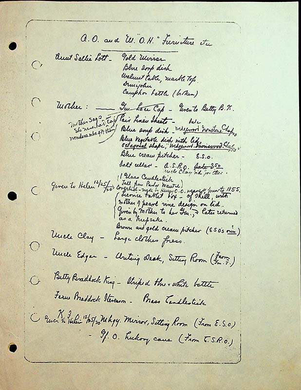

| Aunt Sallie Lot | Gold Mirror |
| Blue soup dish | |
| Walnut table, marble top | |
| Demijohn | |
| Camphor bottle (broken) | |
| Mother- | Gm Lace Cap- Given to Betty B.K Mother says she never had cap wonders who got them |
| Pai Linen Sheet-sale | |
| Blue soup dish-Wedewood Ironstone Chapoo | |
| Blue vegetable dish with lid, octagonal shape, Wedgewood Ironwood Chapoo | |
| Blue cream pitcher -E.S.O | |
| Salt cellar- A.S.R.O sale 3.50 Uncle Clay bid for items | |
| 1 glass candlestick (tall from Parlor Mantel) | |
| (given to Helen 12/25/20 | Coverlid [sic]- made by Henry O.O. weaver, prior to 1855 |
| Licorice tablet box- of shell, with mother of pearl vine design on lid. Given by Mother to her Gm, later returned as a keepsake. |
|
| Brown and gold cream pitcher (E.S.O.'s own?) | |
| Uncle Clay | Large clothes press|
| Uncle Edgar | Writing desk, sitting room (from Gm.F.) |
| Betty Braddock King- | Striped blue and white bottle|
| Fern Braddock Stevenson- | brass Candlesticks |
| K.F.O. 12/25/20 | Mhgy [mohogany] mirror, sitting room (from E.S.O.) Gf. O. hickory cane (from C.S.R.O) |